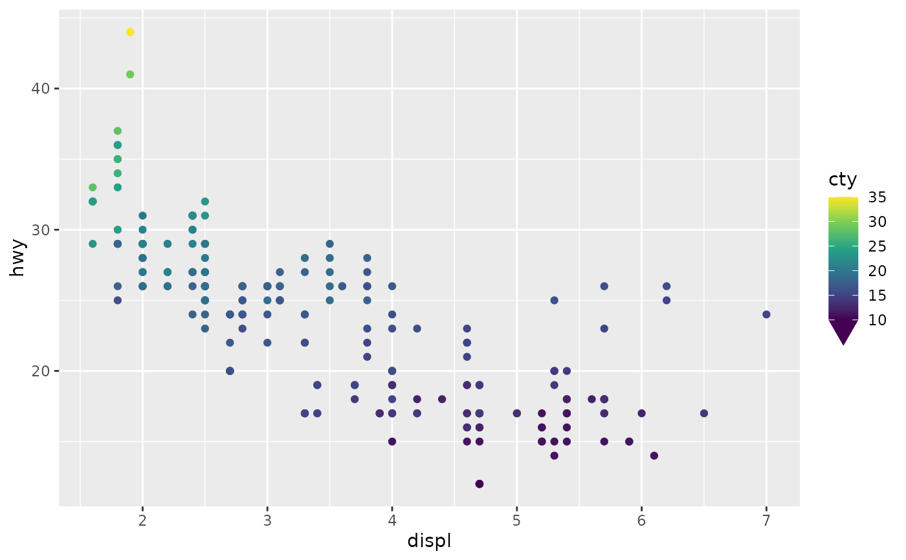

Similar to guide_colourbar(), this guide
displays continuous colour or fill aesthetics. It has additional options
to display caps at the end of the bar, depending on out-of-bounds values.
Arguments
- title
A
<character[1]>or<expression[1]>indicating the title of the guide. IfNULL, the title is not shown. The default,waiver(), takes the name of the scale object or the name specified inlabs()as the title.- key
A sequence key specification. Defaults to
key_sequence(n = 15). Changing the argument tokey_sequence()is fine, but changing the key type is not advised.- first_guide, second_guide
Guides to flank the colour bar. Each guide can be specified using one of the following:
A
<Guide>class object.A
<function>that returns a<Guide>class object.A
<character>naming such a function, without theguide_orprimitive_prefix.
The
first_guidewill be placed at the location specified by thelegend.text.positiontheme setting. Thesecond_guidewill be placed opposite that position. Whensecond_guidehas a label suppression mechanism, no labels will be drawn for that guide.- shape
A cap specification by providing one of the following:
A cap
<function>, such ascap_triangle().A
<character[1]>naming a cap function without the 'cap_'-prefix, e.g."round".A two column
<matrix[n, 2]>giving coordinates for a cap, like those created by cap functions such ascap_arch().
- size
A
<unit>setting the size of the cap. WhenNULL(default), cap size will be proportional to theshapecoordinates and thelegend.key.sizetheme setting.- show
A
<logical>to control how caps are displayed at the ends of the bar. WhenTRUE, caps are always displayed. WhenFALSE, caps are never displayed. WhenNA(default), caps are displayed when the data range exceed the limits. When given as<logical[2]>,show[1]controls the display at the lower end andshow[2]at the upper end.- nbin
A positive
<integer[1]>determining how many colours to use for the colour gradient.- alpha
A
<numeric[1]>between 0 and 1 setting the colour transparency of the bar. UseNAto preserve the alpha encoded in the colour itself.- reverse
A
<logical[1]>whether to reverse continuous guides. IfTRUE, guides like colour bars are flipped. IfFALSE(default), the original order is maintained.- oob
An out-of-bounds handling function that affects the cap colour. Can be one of the following:
A
<function>likeoob_squish.A
<character[1]>naming such a function without the 'oob'-prefix, such as"keep".
- theme
A
<theme>object to style the guide individually or differently from the plot's theme settings. Thethemeargument in the guide overrides and is combined with the plot's theme.- vanilla
A
<logical[1]>whether to have the default style match the vanillaguide_colourbar()(TRUE) or take the theme verbatim (FALSE).- position
A
<character[1]>giving the location of the guide. Can be one of"top","bottom","left"or"right".- available_aes
A
<character>vector listing the aesthetics for which this guide can be build.
Details
As colours are always rendered as gradients, it is important to use a
graphics device that can render these. This can be checked by using
check_device("gradients").
See also
Other standalone guides:
guide_axis_base(),
guide_axis_dendro(),
guide_axis_nested(),
guide_circles(),
guide_colring(),
guide_colsteps(),
guide_legend_base(),
guide_legend_cross(),
guide_legend_group()
Examples
# A standard plot
p <- ggplot(mpg, aes(displ, hwy)) +
geom_point(aes(colour = cty))
# The colourbar shows caps when values are out-of-bounds (oob)
p + scale_colour_viridis_c(
limits = c(10, NA),
guide = "colbar"
)
# It also shows how oob values are handled
p + scale_colour_viridis_c(
limits = c(10, NA), oob = scales::oob_squish,
guide = "colbar"
)

# Adjusting the type of cap
p + scale_colour_viridis_c(
limits = c(10, 30), oob = scales::oob_squish,
guide = guide_colbar(shape = "round")
)
# One-sided ticks
p + scale_colour_viridis_c(
guide = guide_colbar(second_guide = "none")
)
# Colour bar with minor breaks
p + scale_colour_viridis_c(
minor_breaks = scales::breaks_width(1),
guide = guide_colbar(key = "minor")
)
# Using log ticks on a colourbar
ggplot(msleep, aes(sleep_total, sleep_rem)) +
geom_point(aes(colour = bodywt), na.rm = TRUE) +
scale_colour_viridis_c(
transform = "log10",
guide = guide_colbar(key = "log")
)